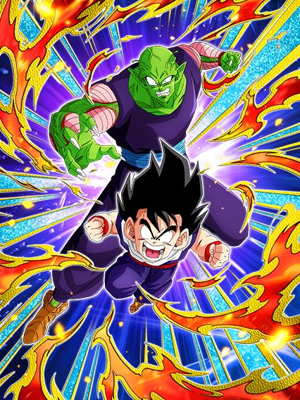
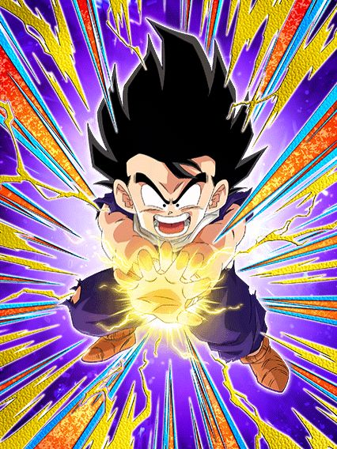
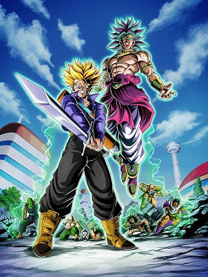
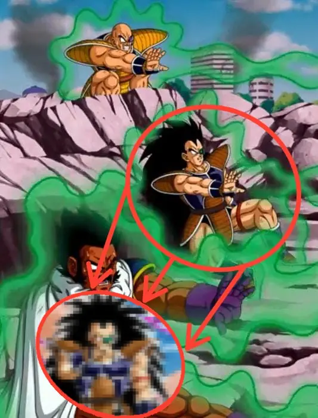

Celebração filler 3: a vingança da vingança
Eis aí uma celebração de todos os tempos, acho que o legal é que essa celebração ENFIM trouxe a atualização do nível de poder que facilita sua vida dependendo do seu nível de poder (pessoalmente eu amei essa atualização)
Mas eh, tirando a atualização, é só uma celebração qualquer que vem antes do dia dos saiyajins, por sinal.. sem ideias doq vai ser.

Gohan do futuro int ao contrário 💀
Eis aí um dokkan fest brabo, praticamente um líder 200% pra quase todo card Bond of Master and Disciple, muito suporte, dano e defesa decentes.. só que é segurado por uma falha q é fatal muitas vezes
Bom, esses caras são um card de slot 2 ou 3, já que eles ganham bastante da defesa depois de darem super, e uma grande coisa é eles darem Ki e 30% de ATK e DEF incondicional pra Bond of Master and Disciple ou Saiyan Saga 💀
Mas eles tmb tem uma habilidade bem forte, onde estando no slot 3, além do suporte já mencionado eles ainda dão outros 30% de ATK e DEF pra qualquer super class, e esse suporte é assustador pq ele dura 3 turnos, é bem forte já q são pouquíssimos os cards q fazem isso (o único q eu vou lembrar agora é Yajirobe TEQ)
Bom, falei do dano, defesa, suporte.. e a falha?
O gohan e piccolo tem uma mecânica oposta a do gohan do futuro int, onde ele ganha 58% de redução de dano se o HP cair abaixo de 70%, isso acontece no meio do turno mesmo, então se vc leva um super de 300k de dano, isso provavelmente vai ativar e o gohan fica super tranquilo
O gohan e o piccolo tem o oposto, eles tem 40% de redução de dano no slot 1 ou 2, e se eles caírem abaixo de 70% de HP, eles PERDEM a redução de dano 💀💀💀
Sim, eles tem um revive, mas o revive precisa q vc já esteja abaixo de 70% de HP no começo do turno, então algo q pode muito acontecer é um super turno 1 slot 1 te deixar abaixo de 70%, transformando o gohan e piccolo em um macarrão espaguete número 10 cru
Bom, caso essa leve trollagem não aconteça com vc, você pode reviver felizmente

Ele destrói tudo no primeiro turno.. e continua destruindo nos turnos seguintes.
Ok ok, antes de falar de qualquer coisa, eu TENHO que falar da animação de revive q é a coisa mais linda, os cara pegaram referência do mangá e tudo slk muito bom
E uma coisa muito braba foi o estilo de OST que escolheram, já que mesmo que o Gohan esteja 100% ódio rages grrr, o Piccolo acabou de morrer, então decidiram que deveria ter uma OST triste, sem guitarras, isso é muito raro
Bom, agora o Gohan vira uma máquina de dano que não ironicamente é invencível no primerio turno, já que caso tenha um Goku (não só base, graças a Deus) no time, ele tem desvio garantido no primeiro turno depois de reviver, isso enquanto ele ganha 750% de ATK crítico garantido, éKKKKKKKK pouco dano slk
Sim, o Gohan é uma bomba nuclear nesse primeiro turno mas ele não fica muito fraco não, depois disso ele ainda tem 50% de chance de desvio, ainda tem 400% de ATK e fica efetivo contra tudo, acho isso bem brabo
Bom, vale mencionar que esse card é genial pra usar com o Goku descalço, já que o revive deles só tem uma restrição de vida e obviamente o Goku ativa a passiva do Gohan, enquanto o Gohan torna o Goku um deus também
Uma real pena que o banner deles é muito, MUITO podre (sim o raditz está no banner)
Eu gosto deles.
Acho q o maior problema deles é o fato do card não ter um papel no time, já que eles não dão suporte nem nada, mas querem q vc coloque eles no slot 3
Esses manos são um tank bem decente, buildam 120% de ATK e DEF com 4 ataques feitos (eu quando um card secundário builda mais fácil que o fraudehan KKKKKKK), tem um adicional garantido com 70% de chance de ser um super, e tem defesa ativa se tiver um Terrifying Conquerors ou Pure Saiyans no time, q é estupidamente fácil de ter
E o extra deles é terem 30% de redução de dano no slot 3, que com a defesa ativa, faz deles um tank decente, mas pra que?
Nada mais na passiva deles muda se eles tiverem no slot 3, se é pra eles serem um tank, pq não ter a redução no slot 1?
Pelo menos a animação de super deles é muito braba..
Ah sim, o card de world tournament.
Eu gosto desse card, mas só por achar eles legais mesmo, já que enquanto estiverem nessa forma, o nappa tem um super attack em área e isso é obviamente bom pra world tournament
Mas em uma boss fight normal.. bom uh, ele tem um dano legal e uma defesa decente, mas aí as últimas linhas da passiva desse card fazem eu querer matar alguém
O mano tem incríveis 78% de ATK e DEF por inimigo existente.
Sabe, fica difícil levar a sério isso, se fosse só ATK eu até não ia ligar muito, mas pô, o cara consegue ter 546% de DEF a mais KKKKKKKKKK pena que é impossível fora do world tournament, mas vale a risada pelo menos
E aí ele tem uma mecânica que não tem nenhuma graça, ganhar 1 de ki por golpe final feito
Eu acho que já falei o bastante sobre oq eu acho dessa desgraça de mecânica de golpe final em outros cards né? Beleza ent
Bom, o nappa tem uma active skill bem desbalanceadinha que corta seu ATK em 50% mas ele ganha desvio garantido por 1 turno, isso pode ser usado a qualquer hora a partir do turno 3.. por mim tá bom
E pra finalizar, o vegeta mata o nappa se seu HP cair abaixo de 50% a partir do turno 4, e aí sim eu diria q o card é usável

Pergunta: Quantos cards extreme class tem um pedaço da passiva q só ativa contra inimigo super class? (eu sei, não dá pra responder)
Bom o vegeta é muito forte por 3 turnos, já q nesses 3 turnos ele tem defesa ativa, dá até pra jogar ele no slot 1 se quiser..
Esse cara ganha 3 de Ki e 180% de ATK e DEF se estiver contra só 1 inimigo, e ganha esse mesmo buff uma segunda vez se estiver contra um inimigo super class, então é, dano e defesa ele tem de monte
Já deu pra notar que Ki também não é problema pra esse cara, e isso é bom pq ele dá crítico garantido se estiver com 24 de Ki
No geral um card muito forte, especialmente contra as blue zones q virão no aniversário.. o problema é passar pelo nappa primeiro né..

Com licença, mas.. global????
Isso aqui é realmente importante de mencionar pq é a coisa mais ridícula possível
Quando o trunks e broly LR lançaram no JP, eles vieram com um bug estranho que zuava o dokkan awakening deles, esse bug impedia eles de virarem LR e travavam eles num estado bizarro, como se fossem um "meio LR" e só deixava essa estrela de bronze do lado da estrela do hidden potential

Em cerca de uma semaninha, tava tudo resolvido, foi feita uma manutenção e as gemas verdes usadas pra comprar as medalhas foram reembolsadas e o awakening foi consertado, maravilha
O grande problema é que isso aconteceu no JP meses atrás e agora que o trunks e broly vieram pro global, eles vieram bugados, sendo que não faz nenhum sentido
O código era pra estar corrigido né, então pq não tá??
Enfim, acho q esse bug valeu mencionar aq pq ele afetou pessoas de forma aleatória, tanto que alguns conseguiram fazer o awakening sem problemas e outros não (eu inclusive não consegui)
Realmente estamos nos aproximando da junção das versões, até os bugs são os mesmos 🔥🔥

O melhor F2P do jogo.
RAAAAHHHHH EU AMO ESSE CARD 🦅🦅🦅
Realmente insano quando o dokkan disse "Está na hora de um original do Dragon Ball Z Dokkan Battle" e realmente mandou um original brabo (sucumba, miles morales da insomniac)
Um fato legal desse card é que no lançamento dele, pelo menos uns 80% dos jogadores de dokkan perguntaram oq tava rolando no Modo Quest pra esses caras estarem lá (eu incluído)
Bom, esses caras tem habilidades muito boas e no momento não tem um eza, oq significa q eles podem sim vir a competir com bosses futuramente
Eles tem 50% de chance de crítico incondicional, lançam 2 adicionais com 30% de serem supers incondicionais também, ganham mais dano e mais Ki por orb rainbow pego, e tem uma parada q eu não sou muito fã, mas é ganhar 31% de ATK e DEF e 8% de redução de dano por super attack feito, o que é bem forte se eles derem 3 ou 4 supers né
Acho que o mais estranho desse card é eles terem uma mecânica de mudar orbs pra rainbow, mas só se eles estiverem no slot 1 ou 3 quando o turno começar
Meio estranho, mas ok né
E não é o bastante, eles também tem uma active skill q é uma cutscene do quest reutilizada mas muito boa, e a ost é maravilhosa também
Eles ganham 20 de Ki gratuitamente e 60% de ATK por 1 turno com uma condição decente, achei bom.

Enfim, esse card é muito maneiro, espero ver mais cards assim, bons e originais, já que o lado F2P do jogo também importa
Ele é muito bom!! por um turno..
Metade da passiva desse gohan só ativa quando tem um goku no time e mais um pedaço ativa se ele estiver no turno, então já dá pra ver q ele não é dos melhores..
Acho q uma coisa legal desse gohan é ele ter 50% de chance de critar toda vez q fizer um ultra super attack, mas é só isso mesmo
O grande valor desse gohan aparece quando vc cai abaixo de 58% de HP, já que aí ele ganha mais buffs, dá crítico garantido e ganha 58% de redução de dano
Infelizmente essa redução só ativa 1 vez na partida toda o que é bem triste mas eh, ele tem 1 turno sendo deus, é alguma coisa
Enfim, mais um prime battle infelizmente medíocre.
Use um time Wicked Bloodline ou vc não tem card, é isso.
Eu vou ser bem direto e já falar que esse card é dano puro e suporte
Sim, o suporte é muito bom, mas qual é cara.. difícil tankar
Esses manos tem um ultra super attack similar aos androids int, que dá 35% de ATK por 2 turnos pra extreme class, isso juntamente com eles darem 30% de ATK e 50% de DEF pra Wicked Bloodline
E eles tem uhh.. basicamente só isso, o resto é só dano bruto e um super adicional garantido contra Super Saiyans que é quase impossível acontecer
Ficou bem óbvio que esse card é restrito a 1 time, que já não é tão forte, e ainda sim ele não é o bastante pra ajudar, já que dano e suporte a gente já tem de monte, olha os coolers né..
Você chegou ao fim dessa página!
Obrigado por ler tudo, e fica a vontade pra ver outras